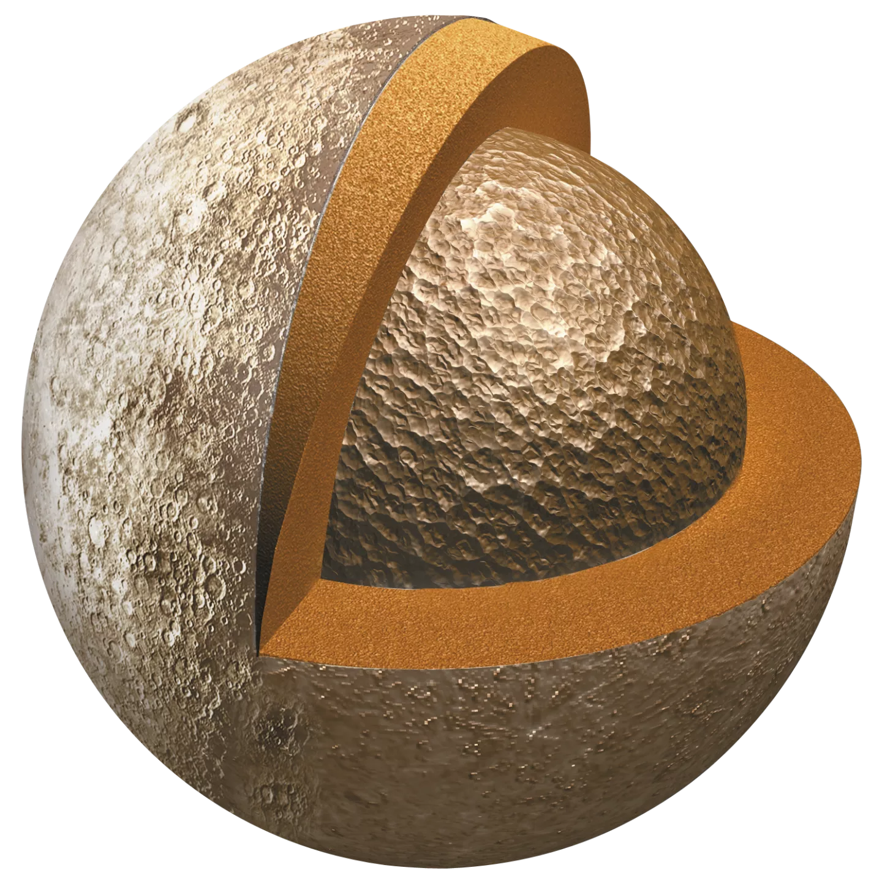

MERCURY
➜
Mercury is the smallest planet in the Solar System and the closest to the Sun. Its orbit around the Sun takes 87.97 Earth days, the shortest of all the Sun's planets. It is named after the Roman god Mercurius (Mercury), god of commerce, messenger of the gods, and mediator between gods and mortals, corresponding to the Greek god Hermes (Ἑρμῆς). Like Venus, Mercury orbits the Sun within Earth's orbit as an inferior planet, and its apparent distance from the Sun as viewed from Earth never exceeds 28°. This proximity to the Sun means the planet can only be seen near the western horizon after sunset or the eastern horizon before sunrise, usually in twilight.
Quick Facts
Day
59 e. d.
YEAR
88 Earth days
]
Radius
2,439.7 kilometers
Planet Type
Terrestrial
Moons
0
Rings
0
source: solarsystem.nasa.gov
10 Need-to-Know Things About Neptune
1
Mercury is the smallest planet in our solar system – only slightly larger than Earth's Moon.
2
Mercury is the planet that orbits the closest to the Sun.
3
Mercury is the fastest planet in our solar system – traveling through space at nearly 29 miles (47 kilometers) per second.
4
Mercury is a rocky planet, also known as a terrestrial planet. Mercury has a solid, cratered surface, much like the Earth's moon.
5
Mercury's thin atmosphere, or exosphere, is composed mostly of oxygen (O2), sodium (Na), hydrogen (H2), helium (He), and potassium (K).
6
Mercury has no moons.
7
There are no rings around Mercury.
8
It is unlikely that life as we know it could survive on Mercury due to solar radiation, and extreme temperatures.
9
Standing on Mercury's surface at its closest approach to the Sun, our star would appear more than three times larger than it does on Earth.
10
Two NASA missions have explored Mercury: Mariner 10 was the first to fly by Mercury, and MESSENGER was the first to orbit.
X

The last picture of Mercury